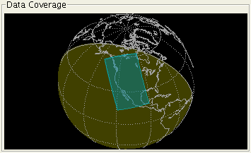

The data coverage display shows a detailed view of the selected satellite dataset on the Earth surface:

The coverage footprint is drawn and highlighted on top of coastlines, latitude/longitude grid lines, and the solar terminator. Two hemispheres are shown, the darker areas representing darkness at the time of the dataset, and lighter areas representing daylight. The earth sphere may be rotated by clicking and dragging with the mouse.